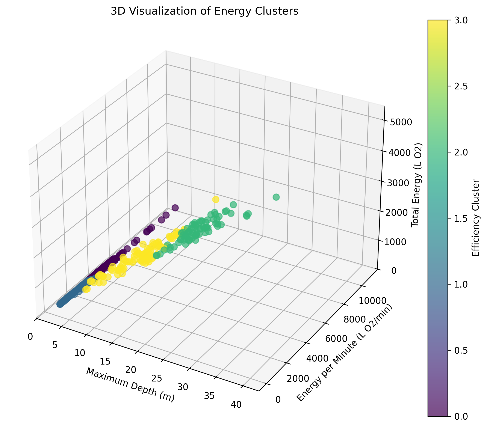
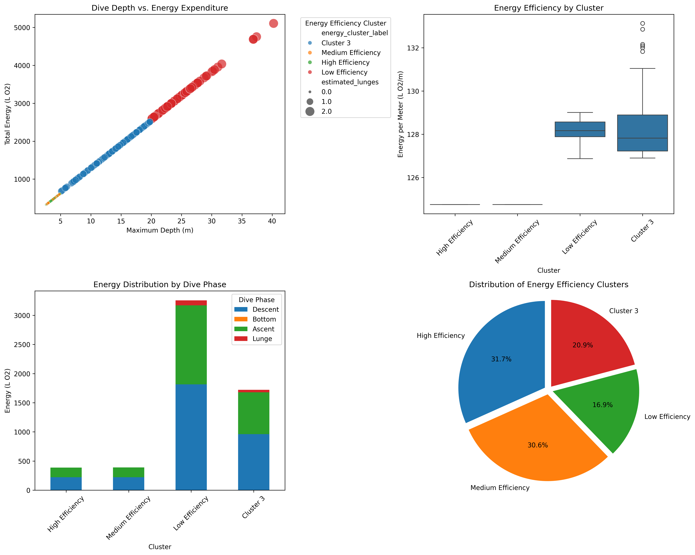
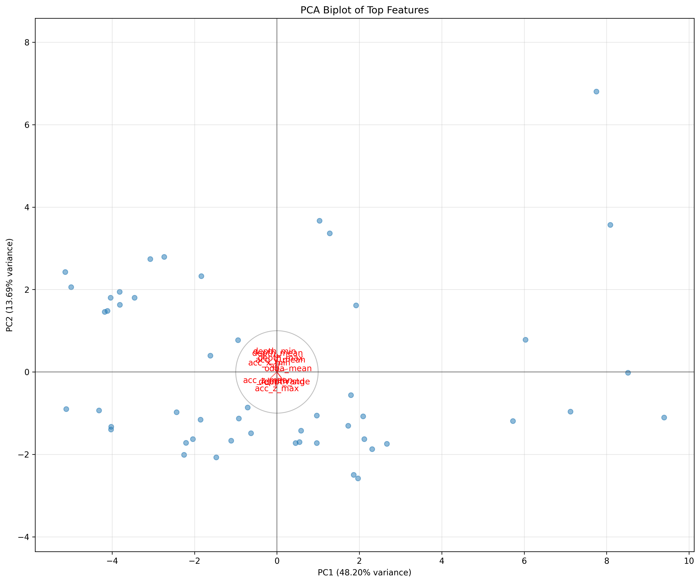

This comprehensive report presents the analysis of whale diving behavior based on sensor data collected from tagged individuals. The analysis includes visualization of dive profiles, energy expenditure patterns, behavioral classification, and statistical insights into diving patterns.
Dataset Overview
Analyzed 445 dives across multiple dive bouts
Identified multiple distinct behavior types including feeding, exploratory dives, and traveling
Depth range: 2.6 to 40.2 meters
Mean dive depth: 9.0 meters
Dive Profile Analysis
Dive Depth Profile with Chronological Coloring
Comprehensive visualization of all dives over time, with color gradient representing chronological progression from early (purple) to late (yellow) in the recording period.
Dive Bout Statistics
The analysis identified a single extended bout containing 445 dives, with the following characteristics:
Duration: 19,790 time units
Mean depth: 9.0 meters
Maximum depth: 40.2 meters
Shallow dives (<20m): 370 (83.1%)
Medium dives (20-50m): 75 (16.9%)
Dive Cycles Analysis
Dive Cycle Patterns
Visualization of complete dive cycles showing pre-dive (light blue), main dive (dark blue), and post-dive (medium blue) phases. Each cycle represents a complete behavioral sequence.
Cycle Statistics
The analysis identified 9 complete dive cycles with the following characteristics:
Average dives per cycle: 10.7
Average pre-dive count: 4.3
Average post-dive count: 5.3
Average cycle duration: 1,634.7 time units
Average main dive depth: 28.1 meters
Energy Expenditure Analysis
3D Visualization of Energy Clusters
Three-dimensional representation of energy expenditure patterns showing relationships between maximum dive depth, energy per minute, and total energy. Colors represent efficiency clusters.

Energy Efficiency Analysis
Detailed analysis of energy efficiency across different diving behaviors, including depth vs. energy expenditure, energy efficiency by cluster, energy distribution by dive phase, and cluster distribution.

Energetic Efficiency Clusters
High Efficiency Cluster (31.7% of dives): Shallow dives (avg. 3.1m) with high energy efficiency, suggesting well-optimized surface feeding behavior.
Medium Efficiency Cluster (30.6% of dives): Shallow dives (avg. 3.1m) showing moderate energy efficiency, likely representing standard foraging behavior.
Low Efficiency Cluster (16.9% of dives): Deeper dives (avg. 25.4m) with lower energy efficiency despite feeding attempts, possibly indicating suboptimal prey patches.
Cluster 3 (20.9% of dives): Intermediate depth dives (avg. 13.5m) with moderate efficiency characteristics.
Dimensionality Reduction Analysis
PCA Biplot of Top Features
Principal Component Analysis showing the relationship between dive features and their contribution to behavioral variability. Red vectors indicate feature loadings, while blue points represent individual dives.

Feature Importance Analysis
The most informative measurements for distinguishing behaviors are:
acc_x_range - Range of x-axis accelerometer readings
acc_x_min - Minimum value of x-axis accelerometer readings
depth_range - Range between minimum and maximum depth during a dive
Behavioral Insights
Most Consistent Behavior: "Side rolls and loop" shows the most consistent sensor signature (compactness: 1.909)
Most Variable Behavior: "Noodle feeding" shows the highest variability (compactness: 6.158), suggesting it may encompass a range of sub-behaviors
Conclusions and Recommendations
Based on the comprehensive analysis of diving behavior, we can draw the following conclusions:
The whale exhibits primarily shallow diving behavior (83.1% of dives less than 20m), with a smaller proportion of medium-depth dives.
The single extended bout suggests a focused behavioral state with no significant interruptions during the recording period.
High energy efficiency in 31.7% of dives indicates well-optimized foraging strategies.
Accelerometer-derived features (particularly x-axis) are the most informative for distinguishing between different behaviors.
Recommendations for Future Analysis
Feature Engineering: Create new features based on the most informative measurements
Behavior Classification: Develop a classifier based on the separability demonstrated in the dimensionality reduction
Sub-behavior Analysis: Investigate potential sub-behaviors within more variable event types
Temporal Analysis: Add time-based analysis to understand behavior transitions
Tyack, P. L., et al. (2006). Extreme diving of beaked whales. Journal of Experimental Biology.
DOI: 10.1242/jeb.02505
Martín López, L. M., et al. (2015). Gait switches in deep-diving beaked whales. Journal of Experimental Biology.
DOI: 10.1242/jeb.106013
Goldbogen, J. A., et al. (2008). Foraging behavior of humpback whales. Journal of Experimental Biology.
DOI: 10.1242/jeb.023366
Goldbogen, J. A., et al. (2011). Mechanics, hydrodynamics and energetics of blue whale lunge feeding. Journal of Experimental Biology.
DOI: 10.1242/jeb.048157
Simon, M., et al. (2012). From surface to depth: Respiratory strokes frequencies of humpback whales. Journal of Experimental Biology.
DOI: 10.1242/jeb.072637
Goldbogen, J. A., et al. (2013). Underwater acrobatics by whales. Biology Letters.
DOI: 10.1098/rsbl.2012.0986
Simon, M., et al. (2012). Keeping momentum with a mouthful of water: Behavior and kinematics of humpback whale lunge feeding. Journal of Experimental Biology, 215(21), 3786-3793.
DOI: 10.1242/jeb.071092